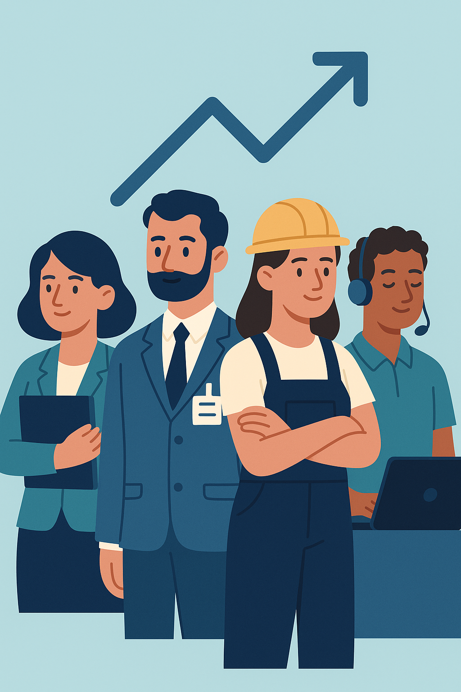

Session 1 – Welcome to Unit 1: Your First Day at Work
✨ Welcome to Your Professional English Journey
Welcome to the first session of the Professional English module, where you’ll build essential skills to communicate confidently in your vocational field!
This is your first session of the course, and your starting point in learning how to communicate professionally in English.
Starting a new job — or a new course — can feel exciting, but also a bit challenging, especially in another language. That’s why in this first session we’ll focus on something essential and very practical: how to talk about yourself and your work.
🧭 In this session, you will:
🗣️ Discover how to introduce yourself in a professional context
🏢 Learn how to describe your job and workplace
📚 Get familiar with key vocabulary and expressions used in the workplace
🔤 Start reviewing useful grammar: Present Simple, Present Continuous, and Past Simple
📝 Complete your first reading, listening, and writing tasks
This first session sets the foundation for everything that comes next. Take your time, enjoy the process, and ask for help if you need it.
Get ready to dive into your first reading activity, designed to help you understand how professionals communicate about their daily work in English, a key skill for your vocational field!
Starting a new job means adapting to new people, routines, and responsibilities. In this text, you’ll meet Emily, an administrative assistant who works in a busy office in the city centre. She shares what a typical day looks like in her job: what time she starts, what tasks she does, how she interacts with her team, and what she enjoys most about her role.
💼 How does this connect to you? As you read, think about how Emily’s tasks might relate to the responsibilities you’ll have in your future career, whether in an office, a hospital, a kitchen, or a tech company.
🔍 Reading strategies to use:
Skim first: Read quickly to get the main idea of Emily’s day.
Scan for details: Look for specific information, like her tasks or schedule, to answer questions.
Use context clues: Guess the meaning of new words (e.g., “collaborate”) from the sentence or situation.
Highlight key points: Note important details about her responsibilities and attitude to stay focused.
Take your time with the text and try to picture Emily’s day. This will help you connect the reading to your own professional goals!
🔍 While you read, think about:
What are her main responsibilities?
What parts of her job do you think are similar to yours (now or in the future)?
How does she stay organised and positive during the day?
Read this text about Emily’s day at work and then complete the activities listed below.
After reading, reflect on how Emily’s day compares to what you expect in your future job. This will prepare you for the activities!
📖 Comprehension Activities: Emily's Office Job
📋 Reading Text
I work in a busy office in the heart of the city. I start my day by arriving at 9 a.m. Every morning, I greet my colleagues with a warm "Good morning" and ask how they are. I believe that a positive start to the day is essential.
My job as an administrative assistant involves handling emails, scheduling meetings, and organizing office events. I have been working in this role for two years and enjoy the variety it brings. Every day is different, and I like that.
One of my main tasks is managing the calendar for the team. I ensure that everyone is aware of upcoming meetings and deadlines. I am also responsible for answering phone calls and helping visitors at the front desk.
During my lunch break, I usually take a stroll to a nearby park. It’s my way of taking a break from the busy office environment and getting some fresh air. It helps me recharge for the rest of the day.
In the afternoon, I focus on completing my tasks for the day. I collaborate with my team members, and they often share a quick chat about their projects. By 5 p.m., I wrap up my work and say goodbye to my colleagues, wishing them a pleasant evening.
I enjoy my job because it allows me to stay organized and interact with different people. Every day brings new challenges, but I find it fulfilling.
🎯 Purpose
These activities test your understanding of the text about Emily’s job as an administrative assistant. Complete the 20 items across three sections: multiple choice, true or false, and vocabulary gap-fill. Use the feedback to check your answers and improve your comprehension skills.
Scoring: Each correct answer is worth 1 point. Total: 20 points. Aim for 17/20 (≈85%) or higher to confirm readiness. If you score less than 17, review the text and try again.
💡 Tip: Read the text carefully to find specific details for each question.
✅ Part 1 – Multiple Choice Questions (10 items)
Instructions: Read each question about the text. Choose the correct answer from the dropdown. Click "Check Answers" for feedback.
1. What does Emily do?
2. Why does Emily believe a positive start to the day is important?
3. How long has Emily been working in her current role?
4. What are some of the tasks Emily handles as an administrative assistant?
5. Why does Emily take a stroll to the nearby park during her lunch break?
6. What time does Emily usually finish her work in the afternoon?
7. What does Emily enjoy about her job?
8. In what ways does Emily interact with her colleagues?
9. How does Emily describe her job as an administrative assistant?
10. According to Emily, why does every day in her job bring new challenges?
💡 Tip: Look for specific details in the text to choose the correct answer.
📝 Part 2 – True or False Questions (5 items)
Instructions: Decide if each statement about the text is true or false. Use the dropdowns to select your answer. Click "Check Answers" for feedback.
11. Emily arrives at the office at 8 a.m. every morning.
12. Emily's job as an administrative assistant involves managing the team's calendar.
13. Emily takes a stroll to a nearby park during her lunch break to grab a quick snack.
14. Emily finishes her work by 6 p.m. every day.
15. Emily has been working in her current role for three years.
💡 Tip: Check the text for exact details to determine if the statement is true or false.
🔍 Part 3 – Vocabulary Gap-Fill (5 items)
Instructions: Find the word from the text that matches each definition. Type the word exactly as it appears in the text. Click "Check Answers" for feedback.
16. They are your fellow workers or associates.
17. It is a specific job or assignment that needs to be completed.
18. A planned piece of work that has a specific purpose and usually involves a team of people working together to achieve a goal.
19. The conditions that you live or work in and the way that they influence how effectively you can work.
20. The latest time or date by which something must be completed. It represents the time limit for finishing a task or project.
💡 Tip: Look for the exact word in the text that fits the definition provided.
📊 Your Score
Click "Check Answers" in each section to see your score.
Extra Reading Practice – Explore Professional Profiles
📖 Enhance Your Workplace Reading
Want to boost your skills in understanding workplace communication? This optional reading practice invites you to explore professional profiles, building on what you learned about jobs and routines in Unit 1, Session 1. Professional profiles are short descriptions of a person’s job, skills, and experience, like the ones you might see on LinkedIn or in a CV. They’re a great way to discover workplace vocabulary and think about your future career in your vocational field!
💼 Why try this? Reading these profiles will help you understand different job roles and skills, preparing you to describe your own work confidently, whether you’re in healthcare, technology, hospitality, or another field.
🔍 Tips for reading:
Skim: Quickly read to find out the person’s job and main role.
Scan: Look for details like skills, tasks, or experience.
Guess meanings: Use the context to understand new words (e.g., “manage” or “design”).
Reflect: Think about how the profile connects to your career goals.
Jot down any interesting words or ideas you find while reading. They’ll help you later when describing your own skills!
📋 Explore These Resources
Check out these British Council resources to practice your reading skills. You can explore them at your own pace:
Professional Profile Summaries: Read short profiles about different jobs, like an architect or a sales manager. These A2-level texts are easy to follow and include tasks to check your understanding.
Professional Profile Writing: Even though this focuses on writing, it includes a B1-level example of a professional profile. Read it to learn how people describe their jobs and skills in English.
Note: These are optional resources. Try reading one or both, and think about how the profiles relate to your vocational field.
As you read, imagine what your own professional profile might say. This will prepare you for future tasks like creating a CV later in the course!
🚀 Keep exploring and building your English skills!
2. Use of English
Use of English – Grammar Introduction
🗣️ Let’s Talk About Grammar!
Welcome to the grammar section of Unit 1, Session 1, where you’ll build the skills to talk about your job and routines in English with confidence! To describe yourself, your work, and your daily tasks, you’ll need two essential tools: the Present Simple and the Present Continuous. In this section, we’ll review how and when to use them—with examples from real professional life.
📌 Present Simple
We use it to talk about:
Habits and routines
Permanent situations
Timetables and schedules
Facts and general truths
Example: I check emails every morning.
⏳ Present Continuous
We use it to talk about:
Actions happening now
Temporary situations
Plans in progress
Changes and trends
Example: I’m writing a report at the moment.
💡 Why is this useful?
Because talking about your job means describing what you do regularly and what you’re doing right now. Mastering these two tenses will help you speak clearly and professionally at work, whether you’re in an office, a hospital, a kitchen, or a tech company.
📍 First Step
Before you continue, please take the Diagnostic Grammar Test below. It will help you reflect on your current knowledge and decide whether you need to complete the grammar activities in this section.
Don’t worry about getting every answer right! The test is a tool to guide your learning and help you shine in your vocational field.
🚀 Ready to start? Let’s dive into grammar!
2.1. Diagnostic Test
Diagnostic Grammar Test Introduction
🧪 Get Ready to Check Your Grammar!
Welcome to the Diagnostic Grammar Test for Unit 1, Session 1, a quick step to assess your skills before diving into grammar for workplace communication! Before we explore grammar explanations, let’s pause to see what you already know. This short test will help you review three key grammar points essential for talking about your job and routines:
Present Simple – to talk about habits and routines
Present Continuous – to describe what’s happening now
Adverbs of frequency – to show how often you do something
This is not a test for marks—it’s a tool to guide your learning and help you succeed in your vocational field.
🎯 What’s the Goal?
The goal is to help you decide if you need to review the grammar in this session—or if you’re ready to move on.
📘 How?
Do the test and check your answers with the Answer Key at the end.
✅ If you score 80% or more, you can skip the grammar section.
📌 If you get less than 80%, take a little time to review—it’ll be worth it!
This test is all about helping you grow your English skills. Use it to plan your learning and shine in your future career!
🚀 Ready to get started? Let’s do this!
📋 Diagnostic Grammar Test – Present Simple & Continuous
🎯 Purpose
Test your grammar knowledge before starting the lesson. This test is for your own reflection and will help you decide if you need to review Present Simple and Present Continuous. Answer all 20 questions in Parts 1–3, then click "Check Answers" for feedback.
Scoring: Each correct answer is worth 1 point. Total: 20 points. If you score 16 or more (≥80%), you may skip the grammar lesson. If you score less than 16, review the grammar section.
💡 Tip: Use Present Simple for routines and facts, and Present Continuous for actions happening now.
✅ Part 1 – Multiple Choice (8 items)
Instructions: Select the correct answer from the dropdown. Only one option is correct. Click "Check Answers" for feedback.
1. Right now, I ______ on a new project with my team.
2. She usually ______ work at 7:30 a.m.
3. Look! He ______ to the manager in her office.
4. We ______ a meeting every Monday.
5. They ______ English this semester to improve their communication.
6. My colleague ______ emails every morning.
7. Listen! The team ______ a presentation right now.
8. The company ______ new staff every summer.
💡 Tip: Look for clues like “right now” for Present Continuous or “every Monday” for Present Simple.
✍️ Part 2 – Rewrite the Sentences (6 items)
Instructions: Rewrite each sentence in full, adding the adverb in brackets in the correct position. Type the complete sentence exactly. Click "Check Answers" for feedback.
9. I go to the office. (always)
10. She checks her emails in the morning. (usually)
11. They have lunch in the cafeteria. (never)
12. We are late to class. (sometimes)
13. He is tired on Mondays. (often)
14. The manager meets the team on Fridays. (rarely)
💡 Tip: Place adverbs like “always” before the main verb, but after “to be” in Present Continuous.
🔍 Part 3 – Grammar Forms (6 items)
Instructions: Fill in the blank with the correct form of the verb in brackets (Present Simple or Present Continuous). Type only the verb form. Click "Check Answers" for feedback.
15. I ______ (not like) working in noisy environments.
16. Right now, she ______ (not answer) the phone.
17. My boss ______ (organise) all the weekly meetings.
18. We ______ (learn) new procedures this week.
19. What ______ you ______ (do) at the moment?
20. The team ______ (not meet) on weekends.
💡 Tip: Use Present Simple for habits and Present Continuous for actions happening now.
📊 Your Score
Click "Check Answers" in each section to see your score.
2.2. Grammar Focus
Grammar Focus – Picture Your Workplace Grammar
🖼️ Paint Your Work in Words
Welcome to the grammar focus of Unit 1, Session 1, where you’ll learn to describe your workplace by picturing it in your mind! Grammar is how we turn mental images of work into clear English. Using a cognitive approach, we’ll explore Present Simple, Present Continuous, and adverbs of frequency to show how you see your routines, current tasks, and how often you do things.
💼 Why this matters? Like Emily’s daily routine in this session’s reading, you can use these tools to share vivid pictures of your work, whether you’re assisting patients, coding software, or serving guests. 🎧 Complementary Audio – Guided Explanation This audio supports you as you go through the lesson. Listen to it for a step-by-step explanation with spoken examples. It’s especially helpful if you prefer learning by listening or want to review while doing other tasks.
🎬 Watch Grammar in Action
Before diving in, watch this fun video from the Grammar Gameshow series to see Present Simple and Present Continuous come to life. Picture Sarah and Jim answering grammar questions in a quiz show—it’s like watching your workplace scenarios unfold!
Why watch? The video helps you visualize how these tenses shape real-life communication, with clear explanations from Leslie, the host. Try guessing the answers to connect with the grammar in your mind.
Reflect: As you watch, imagine using these tenses in your job. What workplace moments do they describe?
📸 Present Simple: A Snapshot of Your Work
Picture Present Simple as a **photo** capturing your workplace routines, facts, or things that stay the same. It shows a stable, repeated scene in your mind.
How it looks: Use the verb’s base form, adding -s for he/she/it (e.g., I work, she works).
Examples:
I assist patients every morning.
She manages a hotel daily.
Computers store data reliably.
When to use it: Picture these workplace moments:
Daily routines: “I check schedules every day.”
Facts: “Nurses help people.”
Schedules: “The shift starts at 8 a.m.”
Common Time Expressions: These words frame your snapshot:
always, usually, often, sometimes, never
every day, on Mondays, once a week, at weekends
Example: “I always arrive on time.”
Reflect: Imagine your daily work—what’s one routine you always do? Try saying it (e.g., “I prepare reports every day”).
🎥 Present Continuous: A Movie of Your Work
Present Continuous is like a **movie clip**, showing workplace actions happening now or temporary situations. It captures a dynamic, ongoing moment in your mind.
How it looks: Use am/is/are + verb with -ing (e.g., I am working).
Examples:
I’m designing a website now.
She’s training new staff today.
We’re planning an event this week.
When to use it: Picture these workplace scenes:
Actions now: “He’s fixing a computer.”
Temporary tasks: “I’m covering a shift this month.”
Planned events: “We’re meeting clients tomorrow.”
Common Time Expressions: These words frame your movie clip:
now, right now, at the moment, today
this week, currently, these days
Example: “I’m working from home today.”
Tip: Some ideas, like “know,” are fixed, so say “I know the system,” not “I’m knowing.”
Reflect: Picture your workplace now—what’s one task you’re doing? Try saying it (e.g., “I’m organizing files now”).
📏 Adverbs of Frequency: Your Frequency Dial
Adverbs of frequency are like a **dial** in your mind, showing how often a workplace routine happens. They add detail to your Present Simple snapshots.
How it looks: Place adverbs (e.g., always, sometimes) before most verbs or after “be” (e.g., I always work, I am always busy).
Examples:
I always check emails in the morning.
She often meets with clients.
We are sometimes late for meetings.
Common Adverbs:
Always (100%): “I always arrive early.”
Often (~70%): “We often work late.”
Sometimes (~50%): “I sometimes eat at my desk.”
Never (0%): “He never misses a deadline.”
Time Expressions: These phrases also show frequency:
every day, once a week, twice a month
Example: “I meet my team once a week.”
Reflect: Picture a routine task—how often do you do it? Try saying it (e.g., “I often update records”).
🖼️🎥 Present Simple vs. Present Continuous
Grammar
Picture in Your Mind
Workplace Example
Time Expressions
Present Simple
Snapshot: Stable
I assist patients daily.
every day, always
Present Continuous
Movie clip: Ongoing
I’m assisting a patient now.
now, this week
Reflect: Imagine one job task as a snapshot and one as a movie clip. Try saying both (e.g., “I cook meals every day. / I’m cooking a meal now.”).
Picture your work as you speak—these grammar tools and video help you create clear, vivid images of your professional life!
🖌️ Paint your workplace in words and shine in your field!
2.3. Practice
🖼️ Picture Your Workplace Grammar Practice
🎯 Introduction
Paint your workplace in words! Using a cognitive grammar approach, this practice section helps you visualize your work to master Present Simple, Present Continuous, and adverbs of frequency. Picture routines as "snapshots," ongoing tasks as "movie clips," and frequency as a "dial." Complete the 20 items across four exercises, reflecting on your workplace as you go. Click "Check Answers" for feedback.
Scoring: Each correct answer is worth 1 point (20 points total). Aim for 16/20 (≥80%) to confirm readiness. If you score less than 16, review the grammar focus.
💡 Tip: Before each exercise, imagine your workplace to connect grammar to your mental images.
📸 Exercise 1: Present Simple Snapshots (5 items)
Instructions: Picture your workplace routines as a "snapshot." Complete the sentences with the correct Present Simple form of the verbs in brackets. Type only the verb form. Click "Check Answers" for feedback.
1. I ______ (assist) customers with their orders every morning.
2. She ______ (manage) the team’s schedule daily.
3. The system ______ (store) all data securely.
4. We ______ (start) our shift at 7 a.m. every day.
5. He ______ (check) the inventory every Friday.
💡 Tip: Picture one routine task you do every day at work. How would you describe it with Present Simple?
🎥 Exercise 2: Present Continuous Movie Clips (5 items)
Instructions: Imagine ongoing tasks at your workplace as a "movie clip." Complete the sentences with the correct Present Continuous form of the verbs in brackets. Type only the verb form (e.g., “am working”). Click "Check Answers" for feedback.
6. Right now, I ______ (design) a new poster for the office.
7. She ______ (train) new staff this afternoon.
8. We ______ (plan) a team event this week.
9. The technician ______ (fix) the printer now.
10. They ______ (work) on a new project today.
💡 Tip: Picture one task happening at your workplace right now. How would you describe it with Present Continuous?
📏 Exercise 3: Adverbs of Frequency Dial (5 items)
Instructions: Visualize how often workplace routines happen, like turning a "frequency dial." Insert the correct adverb of frequency (always, often, sometimes, never, usually) into the sentence. Type only the adverb. Click "Check Answers" for feedback.
11. I ______ check my emails first thing in the morning.
12. She ______ meets with clients in the afternoon.
13. We ______ take breaks during meetings.
14. He ______ arrives early to prepare the office.
15. They ______ work late on Fridays.
💡 Tip: Picture one routine task at work. How often do you do it? Use an adverb to describe it.
🖼️🎥 Exercise 4: Snapshot vs. Movie Clip (5 items)
Instructions: Picture each workplace scenario as either a "snapshot" (routine) or "movie clip" (ongoing). Choose the correct tense (Present Simple or Present Continuous) from the dropdown. Click "Check Answers" for feedback.
16. I ______ reports every Monday morning.
17. Look! She ______ a presentation right now.
18. The team ______ meetings every week.
19. We ______ on a new software update this month.
20. He ______ the system every evening.
💡 Tip: Picture the scenario. Is it a routine (snapshot) or happening now (movie clip)?
📊 Your Score
Click "Check Answers" in each section to see your score.
Text
More Practice – Present Simple vs. Present Continuous
📚 Boost Your Grammar Skills
Want to master describing your workplace routines and current tasks? This optional practice section offers resources to deepen your understanding of Present Simple and Present Continuous, building on Unit 1, Session 1’s grammar focus. These tenses help you paint clear pictures of your work, like Emily’s daily routine in the session’s reading, whether you’re managing a team, updating a system, or assisting clients in your vocational field.
🖼️ Why practice? By exploring these activities, you’ll strengthen your ability to contrast Present Simple (stable routines, like a snapshot) and Present Continuous (ongoing actions, like a movie clip), making your professional English more accurate and confident.
🔍 Tips for practicing:
Picture your work: As you do each exercise, imagine workplace scenarios (e.g., “I always check emails” for routines, “I’m writing a report now” for current tasks).
Check answers: Use the answer keys provided in these resources to reflect on your progress.
Apply to your field: Think about how the sentences relate to your job (e.g., healthcare, IT, hospitality).
Practice regularly: Spend a few minutes daily to build confidence.
Jot down a few sentences from these exercises that describe your work. They’ll help you communicate clearly in your vocational field!
📋 Explore These Practice Resources
Check out these online resources to practice Present Simple and Present Continuous at your own pace. Each offers exercises to sharpen your grammar skills:
Perfect English Grammar: Present Simple vs. Present Continuous: Try these B1-level exercises where you choose the correct tense. Perfect for practicing workplace sentences like “I work every day” or “I’m working on a project now.” Includes answer keys.
Englisch-Hilfen: Present Simple and Present Progressive: Dive into explanations and mixed exercises for B1+ learners, including gap-fills and sentence correction. Great for understanding tense contrasts in professional contexts, with answer keys provided.
LearnEnglish Kids: Present Simple and Continuous Practice: Explore simpler, interactive tasks (A2-B1) with games and quizzes to build confidence. Adapt the examples (e.g., “I’m cooking now”) to your work (e.g., “I’m preparing a patient’s chart”).
Note: These are optional resources. Try one or all, and focus on how the exercises help you describe your job.
As you practice, imagine explaining your job to a colleague. These exercises will help you use Present Simple and Present Continuous like a pro!
🚖 practicing and enhancing your workplace English!
3. Vocabulary
Vocabulary Section Introduction
🧠 Vocabulary Section – Let's Get to Work!
Hi again! I hope everything is going well so far. In Unit 1, Session 1, we’re building your skills to communicate confidently in the workplace, and now it’s time to dive into one of the most useful parts of this unit: vocabulary!
In this section, you’ll learn lots of expressions and words related to jobs, workplaces, and professional responsibilities. This vocabulary will help you complete the upcoming speaking and writing tasks with more confidence and fluency, whether you’re describing your role like Emily in this session’s reading or explaining tasks in your professional field.
“My goal is to learn as much vocabulary as possible so I can explain what I do and what I’m good at.”
Use this section as a personal toolkit — it will make your writing more precise and your speaking more natural.
This section will help you:
💬 Talk about your job, tasks, and responsibilities
🔧 Use workplace vocabulary specific to your professional field
📝 Complete your written and spoken tasks more effectively
Try using one new word from this section in your next task — it’s a great way to make your English shine!
🚀 Let’s get started — you’re doing great!
3.1. Vocabulary Focus and Practice - Universal Jobs
Universal Workplace Roles and Workplaces
🧑💼 Universal Workplace Roles – Master Common Jobs!
Let’s dive into Unit 1, Session 1’s exploration of roles you’ll find in nearly every company or jobs that are super common across industries! Whether you’re talking about your work like Emily in this session’s reading or aiming for a new career, this section will give you the words and ideas to describe these roles confidently in your speaking and writing tasks.
Why this matters? These roles are the heart of any workplace, from small offices to big factories. By picturing their daily routines as snapshots or ongoing tasks as movie clips, you’ll learn to communicate clearly about what people do, boosting your professional English. 🎧 Complementary Audio – Guided Explanation This audio supports you as you go through the lesson. Listen to it for a step-by-step explanation with spoken examples. It’s especially helpful if you prefer learning by listening or want to review while doing other tasks.
🧑💼 Universal Workplace Roles
Here are eight roles you’ll see in most organizations or very common jobs in many industries. Each description uses the Present Simple tense to show their daily routines, like a snapshot of their work.
Receptionist: Receptionists welcome visitors and handle calls at a front desk, using phones and booking systems. They schedule appointments daily and keep the reception area organized.
HR Officer: HR officers manage staff needs in offices, using databases to track employee records. They interview candidates regularly and organize training often.
IT Support Technician: IT support technicians fix tech issues in IT offices, using computers and diagnostic tools. They troubleshoot problems daily and update systems weekly.
Facilities Manager: Facilities managers oversee buildings, using maintenance tools in offices or storage areas. They check equipment every day and coordinate repairs often.
Cleaner: Cleaners keep workplaces tidy, using mops and cleaners in hallways or offices. They sweep floors daily and empty bins every evening.
Delivery Driver: Delivery drivers transport packages, using vans and GPS. They deliver goods every day and check routes before starting.
Sales Assistant: Sales assistants help customers in shops or showrooms, using cash registers and stock lists. They assist shoppers daily and arrange displays often.
Administrative Assistant: Administrative assistants support office tasks, using computers and files. They write emails every day and organize schedules weekly.
Reflect: Picture a role in a workplace you know—what’s one thing they do every day? Try describing it (e.g., “A receptionist answers calls daily.”).
🏢 Common Workplaces
These roles take place in shared workplaces found in most companies. Imagine these settings as the backdrop to your professional snapshots.
Front Desk: A busy area with a phone and visitor log where receptionists work, always active with guests.
HR Office: A quiet space with files and computers where HR officers manage staff, focused and organized.
IT Office: A tech-filled room with monitors and cables where IT support technicians solve problems, often buzzing with activity.
Maintenance Area: A storage space with tools and supplies where facilities managers work, practical and functional.
Common Areas: Hallways or break rooms where cleaners keep things tidy, equipped with cleaning gear.
Delivery Van: A mobile workplace with GPS and packages where drivers operate, always on the road.
Shop Floor: A lively space with products and customers where sales assistants work, bright and welcoming.
Admin Office: A desk-filled area with computers where administrative assistants manage tasks, calm and structured.
Reflect: Think of a workplace you’ve seen—what does it look like? Describe it in one sentence (e.g., “A front desk has a phone and visitor log.”).
📋 Common Tasks
These tasks are what people do in these roles, like movie clips of work happening now or snapshots of daily routines. They use Present Simple for regular tasks and Present Continuous for actions now.
Scheduling: Planning time or tasks. Example: “I schedule meetings weekly.” / “I’m scheduling a call now.”
Assisting: Helping others. Example: “I assist customers every day.” / “I’m assisting a client now.”
Documenting: Recording information. Example: “I document records weekly.” / “I’m documenting a report now.”
Communicating: Sharing information. Example: “I communicate with teams daily.” / “I’m communicating with a supplier now.”
Reflect: Choose a task you see or do at work—describe it using Present Simple or Present Continuous (e.g., “I assist colleagues daily.”).
🔍 Vocabulary Spotlight
Key Terms for Your Workplace
Schedule: To plan tasks or time. Example: “I schedule appointments daily.”
Troubleshoot: To find and fix problems. Example: “I troubleshoot software issues.”
Maintain: To keep in good condition. Example: “I maintain clean workspaces.”
Deliver: To transport items. Example: “I deliver goods every day.”
Assist: To help someone. Example: “I assist clients regularly.”
Document: To record information. Example: “I document employee records.”
Coordinate: To organize tasks. Example: “I coordinate team projects.”
Ensure: To make certain. Example: “I ensure accurate data.”
Reflect: Pick one word from the spotlight—how could you use it in a sentence about your work? (e.g., “I coordinate tasks every week.”).
🎬 Workplace Scenario
Imagine you’re explaining a receptionist’s day to a new colleague. Write or say 2–3 sentences describing their routine, using words from this section. Example: “A receptionist greets visitors every morning and schedules appointments daily. They’re often answering calls and assisting clients.”
Reflect: Try the scenario for a role you know—how would you describe their day?
📋 Summary Table
Role
Workplace
Example Task (Present Simple)
Receptionist
Front Desk
I schedule appointments daily.
HR Officer
HR Office
I interview candidates regularly.
IT Support Technician
IT Office
I troubleshoot problems daily.
Facilities Manager
Maintenance Area
I maintain equipment daily.
Cleaner
Common Areas
I clean rooms every evening.
Delivery Driver
Delivery Van
I deliver packages daily.
Sales Assistant
Shop Floor
I assist customers daily.
Administrative Assistant
Admin Office
I document records weekly.
Use these roles, tasks, and words in your next speaking or writing task to make your English clear and professional!
🚀 Talk about your workplace with confidence and shine in your professional field!
```html
🧑💼 Universal Workplace Roles and Workplaces Practice
🎯 Introduction
Master the vocabulary of workplace roles, workplaces, and tasks! This practice section helps you describe common jobs like those in Emily’s workplace, using words like "schedule" and "troubleshoot." Exercise 3 is a listening activity where you’ll match 30-second audio descriptions to roles (insert your audio files in the placeholders). Complete the 22 items across four exercises. Click "Check Answers" for feedback.
Scoring: Each correct answer is worth 1 point (22 points total). Aim for 18/22 (≈80%) to confirm readiness. If you score less than 18, review the vocabulary section.
💡 Tip: Visualize each workplace role and setting as you answer!
📋 Exercise 1: Role Gap-Fill (6 items)
Instructions: Fill in the blanks with the correct workplace role (e.g., Receptionist, HR Officer). Type the exact role. Click "Check Answers" for feedback.
1. A ______ answers phone calls at the front desk daily.
2. An ______ interviews candidates in the HR office regularly.
3. An ______ fixes tech issues in the IT office daily.
4. A ______ cleans common areas every evening.
5. A ______ helps customers on the shop floor daily.
6. An ______ writes emails in the admin office every day.
💡 Tip: Picture each role’s workplace—what do they do daily?
🔄 Exercise 2: Present Simple vs. Present Continuous (6 items)
Instructions: Choose the correct tense (Present Simple or Present Continuous) for each sentence about workplace tasks. Select from the dropdown. Click "Check Answers" for feedback.
7. I ______ meetings weekly.
8. Right now, I ______ a computer issue.
9. She ______ customers daily.
10. We ______ a report now.
11. I ______ equipment every morning.
12. He ______ with a supplier right now.
💡 Tip: Use Present Simple for routines and Present Continuous for tasks happening now.
🎧 Exercise 3: Match Audio Descriptions to Roles (5 items)
Instructions: Listen to each 30-second audio description and match it to the correct workplace role by selecting from the dropdown. Text placeholders are provided until audio files are inserted. Click "Check Answers" for feedback.
Role 1:
Role 2:
Role 3:
Role 4:
Role 5:
💡 Tip: Listen for key tasks and workplaces to identify the role!
🏢 Exercise 4: Match Tasks to Workplaces (5 items)
Instructions: Match each task to the workplace where it typically happens by selecting from the dropdown. Visualize the setting for each task. Click "Check Answers" for feedback.
18.
Scheduling appointments
19.
Troubleshooting tech issues
20.
Assisting customers with products
21.
Cleaning rooms
22.
Documenting records
💡 Tip: Imagine the workplace setting—where does each task take place?
📊 Your Score
Click "Check Answers" in each section to see your score.
```
3.2. What about your job?
Vocabulary by Professional Field Introduction
🧠 Vocabulary by Professional Field
In Unit 1, Session 1, we’re building your skills to communicate in the workplace, and this section introduces essential technical vocabulary related to your specific professional area. These words and expressions will help you communicate effectively from your first day at work, whether you’re describing your role like Emily in this session’s reading or collaborating in your vocational field.
Why is this important? Using the correct terms in English helps you:
✔️ Understand instructions and safety rules
✔️ Describe your tasks and tools
✔️ Interact confidently with coworkers and supervisors
The vocabulary is organised into different categories, depending on your vocational programme:
👥 People in the company
🏢 Workplaces and departments
🛠️ Tools and equipment
📋 Tasks and responsibilities
💡 Key concepts and work routines
💬 Real-life sample phrases
You will use this vocabulary in speaking and writing tasks, and it will help you prepare for the final exam.
Reflect: 💭 What’s one thing you want to say about your job in English? How might technical vocabulary help you say it clearly?
Get ready to explore the words for your field in the upcoming sections — they’ll make your English shine!
✨ Let’s get started with the words that shape your profession!
Administration and Finance
Vocabulary for Administration and Finance
🧠 Unit 1 Vocabulary – Administration and Finance
Welcome to Unit 1, Session 1’s vocabulary for Administration and Finance! This section equips you with technical terms to communicate confidently on your first day in an office environment, whether you’re handling documents like Emily in this session’s reading or working in finance. Use these words to shine in your speaking and writing tasks and prepare for your final exam.
Context: First day at work in an office environment (administration or finance department).
👥 People in the Company
Office manager: supervises daily activities in the office
Administrative assistant: supports daily operations and handles documents
Finance technician: manages invoices, budgets and payments
Accountant: prepares and analyses financial records
HR officer: manages employee contracts, training, and benefits
Receptionist: welcomes visitors and answers the phone
Client / Supplier: external persons or companies involved in services or purchases
Reflect: 💭 Who’s a key person in an administration office you know? Describe their role in one sentence (e.g., “An accountant prepares financial records.”).
🏢 Workplaces and Departments
Main office: central area where administrative work is done
Front desk: reception area for visitors and calls
Meeting room: space for team discussions
Filing area / Archive: where documents are stored
HR department: handles contracts and staff issues
Finance department: deals with budgeting and company expenses
Reflect: 💭 Picture an administration workplace—what’s one area you’d work in? Describe it (e.g., “The main office has computers and files.”).
🖥️ Tools and Resources
Spreadsheet: digital table to organise data (e.g. Excel)
Accounting software: program to register and manage financial data
Database: structured system to store and retrieve information
Printer / Scanner: basic office equipment for documents
ID badge: access card to enter the workplace
Login credentials: username and password for internal systems
Shared folder: digital space to store and access files with others
Reflect: 💭 Name one tool used in administration—how is it used? (e.g., “A spreadsheet organizes data daily.”).
📑 Tasks and Responsibilities
Manage documentation: handle, classify and store documents
Update records: keep data current in databases
Process invoices: check and input invoice details
Organise meetings: schedule and prepare agendas
Answer phone calls / emails: communicate internally and externally
Welcome visitors: attend people who arrive at the office
Prepare reports: write summaries with relevant business data
Reflect: 💭 What’s one task you’d do in administration? Describe it using Present Simple (e.g., “I process invoices daily.”).
🕒 Routine and Frequency Expressions
Every morning: action that happens at the start of each day
Usually: most of the time
Once a week: one time every week
From time to time: occasionally
Follow up: check on the status of a task
Wrap up: finish or conclude a task or day
Reflect: 💭 Choose a frequency expression—how could you use it in a sentence about office work? (e.g., “I update records every morning.”).
💬 Sample Phrases
I’ve just started working in the finance department.
I usually check emails before updating records.
Today I learned how to process supplier invoices.
I welcomed two visitors and helped them find the HR office.
My manager asked me to prepare the monthly expense report.
Reflect: 💭 Pick one sample phrase—how could you adapt it for your own work? (e.g., “I usually check emails before preparing reports.”).
🎯 Vocabulary Application Task
Imagine it’s your first day in an administration office. Write or say 3–4 sentences describing what you do, using at least three terms from this section. Example: “Every morning, I check emails at the front desk. I process invoices in the finance department and update records in the database.”
Reflect: 💭 How did using these terms help you describe your work clearly?
📋 Summary Table
Category
Example Term
Definition
Sample Use
People
Accountant
Prepares and analyses financial records
I work with the accountant to prepare reports.
Workplaces
Main office
Central area for administrative work
I update records in the main office.
Tools
Spreadsheet
Digital table to organise data
I use a spreadsheet to track budgets.
Tasks
Process invoices
Check and input invoice details
I process invoices every morning.
Routine
Every morning
Action at the start of each day
Every morning, I check emails.
Phrases
Prepare the monthly expense report
Write a summary of expenses
My manager asked me to prepare the monthly expense report.
Use these terms to describe your office tasks in your next speaking or writing task — they’ll make your English clear and professional!
✨ Master these words and shine in your Administration and Finance career!
Transport and Logistics
Vocabulary for Transport and Logistics
🧠 Unit 1 Vocabulary – Transport and Logistics
Welcome to Unit 1, Session 1’s vocabulary for Transport and Logistics! This section equips you with technical terms to communicate confidently on your first day in a transport or logistics company, whether you’re managing shipments like Emily in this session’s reading or working in a warehouse. Use these words to excel in your speaking and writing tasks and prepare for your final exam.
Context: First day at work in a transport or logistics company.
👥 People in the Company
Operations manager: oversees transport operations and team performance
Warehouse supervisor: coordinates staff and processes in the warehouse
Logistics technician: organises goods flow and ensures timely delivery
Forklift operator: moves pallets and loads inside the warehouse
Driver: responsible for transporting goods safely and on time
Customer service representative: assists clients and solves delivery issues
Administrative clerk: handles shipment documents and data entry
Reflect: 💭 Who’s a key person in a logistics company you know? Describe their role in one sentence (e.g., “A driver transports goods daily.”).
🚛 Departments and Roles
Logistics department: area responsible for goods flow and storage
Warehouse team: staff who manage, organise and move products
Freight forwarding area: handles international transport operations
Customer service unit: in charge of client communication
Distribution centre: the place where goods are stored and prepared for delivery
Reflect: 💭 Picture a logistics workplace—what’s one area you’d work in? Describe it (e.g., “The warehouse team organizes products in the distribution centre.”).
📦 Tools and Documents
Delivery note: document confirming items sent or received
Waybill: document showing goods transported and route
Shipping label: sticker with address and barcode for packages
Warehouse Management System (WMS): software to manage inventory and orders
Tracking system: digital tool to monitor delivery progress
Packing list: document listing contents of a shipment
Reflect: 💭 Name one tool or document used in logistics—how is it used? (e.g., “A delivery note confirms received items.”).
📑 Typical Tasks and Actions
Receive and check deliveries: verify that goods match the order
Organise storage: place goods in appropriate locations
Load and unload vehicles: manage physical movement of goods
Prepare shipment documentation: create and verify waybills and delivery notes
Track shipments: monitor progress and resolve issues
Report incidents: communicate problems during transport or storage
Reflect: 💭 What’s one task you’d do in logistics? Describe it using Present Simple (e.g., “I track shipments daily.”).
🌍 Transport and Shipping Modes
Road transport: trucks, vans, buses
Sea freight: container ships and ports
Air cargo: planes and air freight logistics
Rail transport: trains used for bulk or long-distance freight
Multimodal transport: combining two or more transport methods
Reflect: 💭 Choose a transport mode—how might it be used in logistics? (e.g., “Sea freight moves large shipments across oceans.”).
🕒 Routine and Expressions
Shift: a period of work during the day
On schedule: happening at the planned time
Dispatch: send goods to their destination
Delay: something that causes lateness
Damaged goods: items broken or in bad condition
Urgent shipment: delivery that must arrive quickly
Reflect: 💭 Pick a routine expression—how could you use it in a sentence about logistics? (e.g., “We dispatch goods on schedule.”).
💬 Sample Phrases
Today I started my shift in the warehouse at 7:00 a.m.
I received an urgent shipment and had to prepare the documents quickly.
We use a digital tracking system to follow all our deliveries.
I work with the freight forwarding team to organise sea shipments.
There was a delay due to a damaged package — I reported it to the supervisor.
Reflect: 💭 Choose one sample phrase—how could you adapt it for your own work? (e.g., “I started my shift in the distribution centre at 8:00 a.m.”).
🎯 Vocabulary Application Task
Imagine it’s your first day in a transport or logistics company. Write or say 3–4 sentences describing what you do, using at least three terms from this section. Example: “I started my shift in the distribution centre and used the Warehouse Management System to organize storage. I prepared a delivery note for an urgent shipment and tracked its progress.”
Reflect: 💭 How did using these terms help you describe your work clearly?
📋 Summary Table
Category
Example Term
Definition
Sample Use
People
Logistics technician
Organises goods flow and ensures timely delivery
I work with the logistics technician to track shipments.
Departments
Distribution centre
Place where goods are stored and prepared for delivery
I organize storage in the distribution centre.
Tools
Delivery note
Document confirming items sent or received
I prepared a delivery note for the shipment.
Tasks
Track shipments
Monitor progress and resolve issues
I track shipments daily.
Transport Modes
Road transport
Trucks, vans, buses
We use road transport for local deliveries.
Routine
On schedule
Happening at the planned time
Our deliveries are on schedule.
Phrases
Received an urgent shipment
Handled a priority delivery
I received an urgent shipment today.
Use these terms to describe your logistics tasks in your next speaking or writing task — they’ll make your English clear and professional!
✨ Master these words and shine in your Transport and Logistics career!
Electrotechnical and Automated Systems
Vocabulary for Electrotechnical and Automated Systems
🧠 Unit 1 Vocabulary – Electrotechnical and Automated Systems
Welcome to Unit 1, Session 1’s vocabulary for Electrotechnical and Automated Systems! This section equips you with technical terms to communicate confidently on your first day in a company focused on electrical installations, automation, or energy systems, whether you’re working on systems like Emily in this session’s reading or installing equipment. Use these words to excel in your speaking and writing tasks and prepare for your final exam.
Context: First day at work in a company focused on electrical installations, automation or energy systems.
👥 People in the Company
Installation technician: installs and maintains electrical systems and devices
Project engineer: designs and plans the technical projects
Team supervisor: coordinates technicians and ensures correct implementation
Maintenance technician: monitors and repairs breakdowns in installations
Automation specialist: programs and configures automated systems
Health and safety officer: ensures compliance with safety protocols
Reflect: 💭 Who’s a key person in an electrotechnical company you know? Describe their role in one sentence (e.g., “An automation specialist programs systems.”).
🏢 Workplaces and Departments
Control room: area to supervise systems and equipment
Technical office: space for planning, designing and documentation
Warehouse: storage space for tools and electrical materials
Workshop: area for electrical component assembly or testing
On-site installation: client or external location where work is done
Reflect: 💭 Picture an electrotechnical workplace—what’s one area you’d work in? Describe it (e.g., “The control room has monitors and control panels.”).
🧰 Tools and Equipment
Multimeter: instrument for measuring voltage, current and resistance
Control panel: board that operates and monitors an electrical system
PLC (Programmable Logic Controller): device used to automate processes
Circuit breaker: safety device that interrupts power flow in emergencies
Schematic diagram: a technical drawing of an electrical circuit
Cable stripper: tool used to remove insulation from electrical wires
✩ Reflect: What’s one tool used in electrotechnical work? How is it used? (e.g., “A multimeter measures voltage.”)
📑 Tasks and Responsibilities
Read technical plans: interpret diagrams and documents
Assemble installations: build systems according to the project
Test equipment: check that systems work correctly
Perform maintenance: fix problems and keep systems working
Follow safety procedures: use protective gear and avoid risks
Write reports: describe the work done or incidents detected
Reflect: 💭 What’s one task you’d do in an electrical job? Describe it using Present Simple (e.g., “I test equipment daily.”).
⚡ Systems and Concepts
Low voltage: electrical current under 1000V (commonly used)
Automation: system operation without direct human control
Three-phase system: a method of AC electrical power distribution
Grounding: system for protecting installations and people from electric shock
Reflect: 💭 Choose one system or concept—how might you explain it in simple terms? (e.g., “Low voltage is safer for home use.”).
🕒 Routine and Expressions
Early shift: morning schedule (e.g. 7 a.m. to 3 p.m.)
Site visit: checking an external installation
Start-up: process of turning on and testing a system
On-call: available for emergencies outside normal hours
Preventive maintenance: planned checks to avoid breakdowns
Reflect: 💭 Pick one routine expression—how could you use it in a sentence about electrotechnical work? (e.g., “I do preventive maintenance during the early shift.”).
💬 Sample Phrases
I arrived early to prepare the equipment for today's site visit.
My supervisor showed me how to read the electrical schematics.
This morning I tested the automation system and checked the PLC.
We installed a photovoltaic system on the roof and connected it to the grid.
After completing the task, I’ve wrote a short report and submitted it to the engineer.
Reflect: 💭 Choose one sample phrase—how could you adapt it for your own work? (e.g., “I tested the control panel this morning.”).
🎯 Vocabulary Application Task
Imagine it’s your first day in an electrotechnical or automation company. Write or say 3–4 sentences describing what you do, using at least three terms from this section. Example: “During my early shift, I used a multimeter to test equipment in the control room. I read a schematic diagram for a new installation and wrote a report for the project engineer.”
Reflect: 💭 How did using these terms help you describe your work clearly?
📋 Summary Table
Category
Example Term
Definition
Sample Use
People
Automation specialist
Programs and configures automated systems
I work with the automation specialist to configure a PLC.
Workplaces
Control room
Area to supervise systems and equipment
I monitor systems in the control room.
Tools
Multimeter
Instrument for measuring voltage
I use a multimeter to check circuits.
Tasks
Test equipment
Check that systems work correctly
I test equipment daily.
Systems
Low voltage
Electrical current under 1000V
We use low voltage systems for safety.
Routine
Early shift
Morning schedule (7 a.m. to 3 p.m.)
I work the early shift to start systems.
Phrases
Read the electrical schematics
Interpret diagrams
My supervisor showed me how to read the electrical schematics.
Use these terms to describe your electrical and automation tasks in your next speaking or writing task — they’ll make your English clear and professional!
✨ Master these words and shine in your Electrotechnical and Automated Systems career!
Energy Efficiency and Solar Thermal Energy
Vocabulary for Energy Efficiency and Solar Thermal Energy
🧠 Unit 1 Vocabulary – Energy Efficiency and Solar Thermal Energy
Welcome to Unit 1, Session 1’s vocabulary for Energy Efficiency and Solar Thermal Energy! This section equips you with technical terms to communicate confidently on your first day in a company focused on energy efficiency, renewable energy systems, or solar thermal installations, whether you’re assessing systems like Emily in this session’s reading or installing solar collectors. Use these words to excel in your speaking and writing tasks and prepare for your final exam.
Context: First day at work in a company focused on energy efficiency, renewable energy systems, and solar thermal installations.
👥 People in the Company
Energy efficiency technician: installs and maintains efficient energy systems
Solar thermal installer: sets up and repairs solar heating systems
Site supervisor: manages installations and verifies compliance
Energy auditor: analyses buildings to improve energy use
Project engineer: plans and coordinates technical work
Environmental consultant: gives advice on sustainability and legal requirements
Reflect: 💭 Who’s a key person in an energy efficiency company you know? Describe their role in one sentence (e.g., “An energy auditor assesses building energy use.”).
🏢 Workplaces and Departments
Technical office: where projects and calculations are prepared
Installation site: buildings or locations where systems are implemented
Maintenance area: space for storing tools and planning repairs
Monitoring room: controls system performance remotely
Reflect: 💭 Picture an energy efficiency workplace—what’s one area you’d work in? Describe it (e.g., “The installation site has solar panels and tools.”).
🔧 Tools and Equipment
Thermal sensor: measures heat or temperature in a system
Solar collector: panel that captures sunlight to heat water
Pump system: moves fluid through pipes or circuits
Thermal tank: stores hot water in solar installations
Insulation material: prevents energy loss in pipes or walls
Measuring instruments: tools to evaluate energy performance (e.g. clamp meter, flow meter)
Reflect: 💭 Name one tool used in solar thermal work—how is it used? (e.g., “A thermal sensor measures system heat.”).
📑 Tasks and Responsibilities
Assess energy consumption: analyse how much energy is used
Prepare energy reports: write technical documents for clients or authorities
Install solar thermal systems: set up water heating systems powered by the sun
Maintain heating circuits: check and repair parts of the system
Apply safety protocols: follow procedures to avoid risks
Inspect insulation and ventilation: verify efficiency measures in buildings
Reflect: 💭 What’s one task you’d do in energy efficiency? Describe it using Present Simple (e.g., “I assess energy consumption weekly.”).
🌱 Key Concepts
Energy audit: complete analysis of a building’s energy use
Renewable energy: energy from natural sources like sun and wind
Thermal efficiency: ratio between useful energy and total energy used
Solar circuit: path that water or fluid follows in a solar system
Heat exchanger: device to transfer heat from one fluid to another
Reflect: 💭 Choose one concept—how might you explain it in simple terms? (e.g., “Renewable energy comes from the sun.”).
🕒 Routine and Expressions
Site visit: inspection or work done outside the main office
Morning briefing: quick team meeting at the start of the day
Daily checklist: routine list of actions to complete
System check: review of installation status and performance
Emergency repair: urgent fix needed to restore service
Reflect: 💭 Pick one routine expression—how could you use it in a sentence about solar thermal work? (e.g., “I do a system check during the morning briefing.”).
💬 Sample Phrases
On my first day, I joined a site visit to check a solar thermal system.
The technician explained how to read the flow meter and adjust the pump.
We used thermal sensors to detect heat loss in the pipes.
After installing the collectors, we tested the temperature in the tank.
I wrote a short report with the audit results and suggested improvements.
Reflect: 💭 Choose one sample phrase—how could you adapt it for your own work? (e.g., “I joined a site visit to install a solar collector.”).
🎯 Vocabulary Application Task
Imagine it’s your first day in an energy efficiency or solar thermal company. Write or say 3–4 sentences describing what you do, using at least three terms from this section. Example: “During a site visit, I used a thermal sensor to check a solar circuit. I helped install a solar collector and prepared an energy report for the project engineer.”
Reflect: 💭 How did using these terms help you describe your work clearly?
📋 Summary Table
Category
Example Term
Definition
Sample Use
People
Energy auditor
Analyses buildings to improve energy use
I work with the energy auditor to assess consumption.
Workplaces
Installation site
Buildings where systems are implemented
I install collectors at the installation site.
Tools
Thermal sensor
Measures heat in a system
I use a thermal sensor to check pipes.
Tasks
Assess energy consumption
Analyse how much energy is used
I assess energy consumption weekly.
Concepts
Renewable energy
Energy from natural sources
We use renewable energy from solar collectors.
Routine
Site visit
Inspection outside the office
I do a site visit to check systems.
Phrases
Tested the temperature in the tank
Checked thermal tank performance
We tested the temperature in the tank after installation.
Use these terms to describe your energy efficiency tasks in your next speaking or writing task — they’ll make your English clear and professional!
✨ Master these words and shine in your Energy Efficiency and Solar Thermal Energy career!
Kitchen Management
Vocabulary for Higher Technician in Kitchen Management
🧠 Unit 1 Vocabulary – Higher Technician in Kitchen Management
Welcome to Unit 1, Session 1’s vocabulary for Higher Technician in Kitchen Management! This section equips you with technical terms to communicate confidently on your first day in a professional kitchen or culinary management environment, whether you’re preparing dishes like Emily in this session’s reading or managing inventory. Use these words to excel in your speaking and writing tasks and prepare for your final exam.
Context: First day at work in a professional kitchen or culinary management environment.
👥 People in the Company
Head chef (Executive chef): overall kitchen manager and planner
Sous chef: second-in-command, assists and replaces the head chef
Line cook: prepares specific dishes on the menu
Pastry chef: prepares desserts and baked goods
Kitchen assistant: helps with prep, cleaning, and organization
Purchasing manager: handles supplier orders and kitchen stock
Reflect: 💭 Who’s a key person in a professional kitchen you know? Describe their role in one sentence (e.g., “A head chef plans the menu.”).
🏢 Workplaces and Departments
Main kitchen: the central area where meals are prepared
Cold station: area for salads and cold dishes
Hot station: area where main courses are cooked
Storage room: keeps dry goods and pantry items
Walk-in fridge / freezer: cold storage for perishables
Office: used by the chef or kitchen manager for planning
Reflect: 💭 Picture a professional kitchen—what’s one area you’d work in? Describe it (e.g., “The hot station has stoves and grills.”).
🔧 Tools and Equipment
Chef's knife: essential tool for cutting, slicing, and chopping
Cutting board: surface for food preparation
Oven / stove: for baking, roasting and boiling
Blender / mixer: used for sauces, soups, and dough
Thermometer: checks internal food temperatures
Weighing scale: measures ingredients precisely
Reflect: 💭 Name one tool used in a kitchen—how is it used? (e.g., “A chef’s knife cuts vegetables.”).
📑 Tasks and Responsibilities
Plan menus: decide meals to serve, seasonally or daily
Supervise food preparation: oversee quality and safety
Organize kitchen staff: assign roles and shifts
Manage inventory: control food stocks and make orders
Ensure hygiene standards: maintain cleanliness and food safety
Coordinate with suppliers: order and receive fresh ingredients
Reflect: 💭 What’s one task you’d do in a kitchen? Describe it using Present Simple (e.g., “I plan menus weekly.”).
🍳 Key Concepts
Mise en place: preparation and setup before service
Food safety: correct handling to prevent contamination
Allergen control: manage foods that may cause allergic reactions
Recipe standardisation: ensuring consistency in dishes
Cost control: tracking food costs and minimizing waste
Reflect: 💭 Choose one concept—how might you explain it in simple terms? (e.g., “Mise en place means preparing ingredients.”).
🕒 Routine and Expressions
Opening shift: early morning preparation and setup
Service time: period when meals are served
Clean-up: end-of-day duties to maintain hygiene
Prep work: early tasks like cutting and portioning
Stock check: review of inventory at the end of the shift
Reflect: 💭 Pick one routine expression—how could you use it in a sentence about kitchen work? (e.g., “I do prep work during the opening shift.”).
💬 Sample Phrases
Today I helped prepare the mise en place for the lunch service.
My head chef showed me how to portion meat and check temperatures.
I cleaned the cold station and organized the fridge after service.
We checked inventory and updated the supplier order list.
I prepared two starters and one dessert under supervision.
Reflect: 💭 Choose one sample phrase—how could you adapt it for your own work? (e.g., “I helped prepare mise en place for dinner service.”).
🎯 Vocabulary Application Task
Imagine it’s your first day in a professional kitchen. Write or say 3–4 sentences describing what you do, using at least three terms from this section. Example: “During the opening shift, I prepared mise en place at the cold station. I used a thermometer to check food temperatures and helped manage inventory with the sous chef.”
Reflect: 💭 How did using these terms help you describe your work clearly?
📋 Summary Table
Category
Example Term
Definition
Sample Use
People
Head chef
Overall kitchen manager and planner
I work with the head chef to plan menus.
Workplaces
Main kitchen
Central area where meals are prepared
I prepare dishes in the main kitchen.
Tools
Chef’s knife
Tool for cutting and chopping
I use a chef’s knife to prep vegetables.
Tasks
Plan menus
Decide meals to serve
I plan menus weekly.
Concepts
Mise en place
Preparation before service
I prepare mise en place for lunch service.
Routine
Opening shift
Early morning preparation
I do prep work during the opening shift.
Phrases
Check temperatures
Verify food safety
My head chef showed me how to check temperatures.
Use these terms to describe your kitchen tasks in your next speaking or writing task — they’ll make your English clear and professional!
✨ Master these words and shine in your Kitchen Management career!
Processes and Quality in the Food Industry
Vocabulary for Higher Technician in Processes and Quality in the Food Industry
🧠 Unit 1 Vocabulary – Higher Technician in Processes and Quality in the Food Industry
Welcome to Unit 1, Session 1’s vocabulary for Higher Technician in Processes and Quality in the Food Industry! This section equips you with technical terms to communicate confidently on your first day in a food production facility or quality control laboratory, whether you’re testing samples like Emily in this session’s reading or monitoring production. Use these words to excel in your speaking and writing tasks and prepare for your final exam.
Context: First day at work in a food production facility or quality control laboratory.
👥 People in the Company
Production manager: oversees manufacturing processes
Quality control technician: checks food products and processes
Line supervisor: coordinates teams on the production line
Laboratory analyst: performs food tests and prepares reports
Packaging operator: manages packing and labelling
Food safety officer: ensures compliance with hygiene and safety regulations
Reflect: 💭 Who’s a key person in a food production facility you know? Describe their role in one sentence (e.g., “A quality control technician tests products for safety.”).
🏢 Workplaces and Departments
Processing area: where food products are prepared or transformed
Quality lab: for chemical, microbiological or sensory analysis
Cold storage room: maintains food at low temperatures
Packaging line: area where products are packed and labelled
Control office: where monitoring and records are kept
Reflect: 💭 Picture a food production workplace—what’s one area you’d work in? Describe it (e.g., “The quality lab has testing equipment.”).
🔧 Tools and Equipment
Thermometer: measures product or room temperature
pH meter: checks the acidity level of food
Spectrophotometer: measures the intensity of light for analysis
Scales and balances: measure precise quantities of ingredients
Packaging machine: wraps and seals food containers
PPE (Personal Protective Equipment): gloves, masks, coats for hygiene and safety
Reflect: 💭 Name one tool used in food quality control—how is it used? (e.g., “A pH meter checks food acidity.”).
📑 Tasks and Responsibilities
Perform quality checks: analyse samples to ensure compliance
Monitor production: check stages of manufacturing
Prepare documentation: write reports and update control records
Manage packaging: operate machines and check labels
Conduct microbiological tests: analyse bacteria and microorganisms
Apply HACCP protocols: follow safety control procedures
Reflect: 💭 What’s one task you’d do in food production? Describe it using Present Simple (e.g., “I perform quality checks daily.”).
🥫 Key Concepts
Shelf life: how long a food product remains safe and good to eat
Traceability: ability to track ingredients and processes
Spoilage: deterioration of food products
Contaminant: substance that makes food unsafe
Food labelling: legal information on packaging (ingredients, dates, etc.)
Reflect: 💭 Choose one concept—how might you explain it in simple terms? (e.g., “Shelf life is how long food stays fresh.”).
🕒 Routine and Expressions
Shift handover: report between outgoing and incoming teams
Sampling process: how product samples are taken for testing
Standard operating procedure (SOP): set process followed step by step
Cleaning protocol: required hygiene actions in the facility
Deviation report: log of any abnormal situation or issue
Reflect: 💭 Pick one routine expression—how could you use it in a sentence about food production? (e.g., “I complete a shift handover report daily.”).
💬 Sample Phrases
On my first day, I learned how to operate the packaging line safely.
I helped collect product samples for microbiological testing.
We recorded the results of a pH analysis in the lab logbook.
The supervisor explained how to complete a traceability record.
At the end of the shift, I assisted with cleaning the production area.
Reflect: 💭 Choose one sample phrase—how could you adapt it for your own work? (e.g., “I collected samples for pH testing in the quality lab.”).
🎯 Vocabulary Application Task
Imagine it’s your first day in a food production facility or quality control lab. Write or say 3–4 sentences describing what you do, using at least three terms from this section. Example: “During my shift, I used a pH meter to perform quality checks in the quality lab. I followed HACCP protocols and prepared documentation for the line supervisor.”
Reflect: 💭 How did using these terms help you describe your work clearly?
📋 Summary Table
Category
Example Term
Definition
Sample Use
People
Quality control technician
Checks food products and processes
I work with the quality control technician to test samples.
Workplaces
Quality lab
For chemical or microbiological analysis
I conduct tests in the quality lab.
Tools
pH meter
Checks food acidity level
I use a pH meter for quality checks.
Tasks
Perform quality checks
Analyse samples for compliance
I perform quality checks daily.
Concepts
Traceability
Ability to track ingredients
We maintain traceability for safety.
Routine
Shift handover
Report between teams
I complete a shift handover report.
Phrases
Complete a traceability record
Document ingredient tracking
The supervisor showed me how to complete a traceability record.
Use these terms to describe your food production tasks in your next speaking or writing task — they’ll make your English clear and professional!
✨ Master these words and shine in your Processes and Quality in the Food Industry career!
Information Technology and Communications (ICT)
Vocabulary for Information and Communication Technologies
🧠 Unit 1 Vocabulary – Information and Communication Technologies (ICT)
Welcome to Unit 1, Session 1’s vocabulary for Information and Communication Technologies! This section equips you with technical terms to communicate confidently on your first day in a tech company, development team, or IT department, whether you’re coding applications like Emily in this session’s reading or configuring networks. Use these words to excel in your speaking and writing tasks and prepare for your final exam.
Context: First day at work in a tech company, development team or IT department.
👥 People in the Company
IT technician: manages hardware and software support
Network administrator: configures and maintains network systems (Network Systems Management)
Frontend developer: implements user interfaces (Web Dev)
Full-stack developer: handles both backend and frontend
Software tester: detects and reports application errors
DevOps engineer: automates and manages infrastructure and deployments
Project manager: coordinates development timelines and tasks
Reflect: 💭 Who’s a key person in an ICT company you know? Describe their role in one sentence (e.g., “A backend developer programs server logic.”).
🏢 Workplaces and Departments
IT department: handles all technical infrastructure
Development team room: shared space for programmers
Server room: secured area for hosting systems (Network Systems)
Helpdesk: provides user support
Testing lab: environment for quality checks and simulations
Cloud services: remote infrastructure for apps and data
Reflect: 💭 Picture an ICT workplace—what’s one area you’d work in? Describe it (e.g., “The server room has cooling systems and routers.”).
🧰 Tools and Technologies
IDE (Integrated Development Environment): tool to write and test code
Version control system (Git): manages code changes
Terminal / CLI: command-line interface to manage systems
Virtual machine: emulated environment to test or deploy apps
Database: stores and retrieves structured data
Framework: collection of tools/libraries to simplify development (e.g. Spring, Angular)
Network switch / router: directs data traffic (Network Systems)
Bug tracking system: logs and follows issues (e.g. Jira)
Reflect: 💭 Name one tool used in ICT—how is it used? (e.g., “Git manages code versions.”).
📑 Tasks and Responsibilities
Write and debug code: create and fix software applications
Set up user accounts and permissions: configure access (Network Systems)
Deploy applications: launch software to production
Monitor system performance: analyse and optimise usage
Update software: keep programs and security patches current
Conduct code reviews: check and approve others’ code
Test functionality: ensure features work as expected
Reflect: 💭 What’s one task you’d do in ICT? Describe it using Present Simple (e.g., “I write code daily.”).
💡 Key Concepts
Open-source: software with public, modifiable code
Agile methodology: iterative approach to software development
Cloud computing: use of remote servers for storage or services
Data security: protecting information from unauthorised access
Continuous integration (CI): automating code integration and testing
Reflect: 💭 Choose one concept—how might you explain it in simple terms? (e.g., “Cloud computing uses online servers.”).
🕒 Routine and Expressions
Daily stand-up: short team meeting to report progress
Push code to repository: upload code updates
System check: verify that infrastructure or services are working
Log in / log out: access or exit the system
Help a user with a ticket: resolve an IT support request
Reflect: 💭 Pick one routine expression—how could you use it in a sentence about ICT work? (e.g., “I push code to the repository every day.”).
💬 Sample Phrases
On my first day, I cloned the repository and set up the development environment.
I helped the sysadmin reset a user password and configure access rights.
We tested the new feature and submitted a bug report through Jira.
During the stand-up, I explained what I was working on and asked for help with a merge conflict.
The backend developer reviewed my code before I pushed it to the main branch.
Reflect: 💭 Choose one sample phrase—how could you adapt it for your own work? (e.g., “I set up a virtual machine for testing.”).
🎯 Vocabulary Application Task
Imagine it’s your first day in a tech company or IT department. Write or say 3–4 sentences describing what you do, using at least three terms from this section. Example: “During the daily stand-up, I reported progress on writing code in the IDE. I used Git to push updates to the repository and helped resolve a user ticket at the helpdesk.”
Reflect: 💭 How did using these terms help you describe your work clearly?
📋 Summary Table
Category
Example Term
Definition
Sample Use
People
Backend developer
Programs server-side logic
I work with the backend developer to fix code.
Workplaces
Server room
Secured area for hosting systems
I check equipment in the server room.
Tools
IDE
Tool to write and test code
I use an IDE to develop applications.
Tasks
Write and debug code
Create and fix software
I write and debug code daily.
Concepts
Cloud computing
Use of remote servers
We use cloud computing for storage.
Routine
Daily stand-up
Short team meeting
I report progress in the daily stand-up.
Phrases
Push code to repository
Upload code updates
I pushed code to the repository today.
Use these terms to describe your ICT tasks in your next speaking or writing task — they’ll make your English clear and professional!
✨ Master these words and shine in your ICT career!
Prevention of Occupational Risks
Vocabulary for Advanced Expert in Prevention of Occupational Risks
🧠 Unit 1 Vocabulary – Advanced Expert in Prevention of Occupational Risks
Welcome to Unit 1, Session 1’s vocabulary for Advanced Expert in Prevention of Occupational Risks! This section equips you with technical terms to communicate confidently on your first day in a health and safety department or consulting company, whether you’re assessing risks like Emily in this session’s reading or conducting safety training. Use these words to excel in your speaking and writing tasks and prepare for your final exam.
Context: First day at work in a health and safety department or consulting company specialized in risk prevention.
👥 People in the Company
Prevention technician: identifies and assesses occupational risks
Health and safety officer: coordinates and supervises safety procedures
Occupational health specialist: advises on workplace health issues
Emergency coordinator: organizes emergency responses and drills
Consultant in risk management: advises companies on safety strategies
Reflect: 💭 Who’s a key person in a health and safety department you know? Describe their role in one sentence (e.g., “A prevention technician identifies workplace risks.”).
🏢 Workplaces and Departments
Safety office: coordinates health and safety activities
Training room: space for safety workshops and briefings
Worksite: production or operational area under evaluation
Emergency exit and assembly point: designated locations for evacuation
Control panel room: monitors alarms and safety systems
Reflect: 💭 Picture a health and safety workplace—what’s one area you’d work in? Describe it (e.g., “The training room has safety posters and projectors.”).
🧰 Tools and Equipment
PPE (Personal Protective Equipment): helmets, gloves, goggles, etc.
Sound level meter: measures workplace noise
Gas detector: detects presence of toxic or flammable gases
Light meter: evaluates lighting conditions
First aid kit: provides emergency care supplies
Extinguisher and fire blanket: used to control small fires
Reflect: 💭 Name one tool used in risk prevention—how is it used? (e.g., “A gas detector checks for toxic gases.”).
📑 Tasks and Responsibilities
Carry out risk assessments: evaluate potential hazards at the workplace
Develop safety plans: create procedures to prevent accidents
Deliver safety training: educate staff on health and safety
Conduct inspections: review compliance with regulations
Respond to emergencies: act in case of fire, injury or evacuation
Maintain records: document incidents, inspections, and reports
Reflect: 💭 What’s one task you’d do in risk prevention? Describe it using Present Simple (e.g., “I carry out risk assessments weekly.”).
⚠️ Key Concepts
Occupational risk: potential harm from workplace conditions
Prevention plan: strategy to avoid risks at work
Hazard: source of possible harm or danger
Workload stress: excessive pressure or mental strain
Safety signage: posters and symbols warning of danger or safety procedures
Reflect: 💭 Choose one concept—how might you explain it in simple terms? (e.g., “A hazard is something dangerous at work.”).
🕒 Routine and Expressions
Safety briefing: quick meeting before starting work
Incident report: document describing an accident or near miss
Inspection checklist: step-by-step guide to verify safety elements
Evacuation drill: practice activity for emergency escape
Corrective action: steps taken to fix a safety problem
Reflect: 💭 Pick one routine expression—how could you use it in a sentence about risk prevention? (e.g., “I conduct a safety briefing every morning.”).
💬 Sample Phrases
On my first day, I attended a safety induction and reviewed the company’s prevention plan.
We used a gas detector to measure air quality in the confined space area.
I was shown how to complete an incident report after observing a minor injury.
The team discussed potential hazards during the morning safety briefing.
I checked that all PPE was available and in good condition before the inspection.
Reflect: 💭 Choose one sample phrase—how could you adapt it for your own work? (e.g., “I reviewed the prevention plan during my safety induction.”).
🎯 Vocabulary Application Task
Imagine it’s your first day in a health and safety department or consulting company. Write or say 3–4 sentences describing what you do, using at least three terms from this section. Example: “During a safety briefing, I discussed hazards with the team. I used a sound level meter to assess noise at the worksite and completed an incident report for a near miss.”
Reflect: 💭 How did using these terms help you describe your work clearly?
📋 Summary Table
Category
Example Term
Definition
Sample Use
People
Prevention technician
Identifies and assesses occupational risks
I work with the prevention technician to evaluate hazards.
Workplaces
Safety office
Coordinates health and safety activities
I plan safety activities in the safety office.
Tools
Gas detector
Detects toxic or flammable gases
I use a gas detector to check air quality.
Tasks
Carry out risk assessments
Evaluate potential hazards
I carry out risk assessments weekly.
Concepts
Hazard
Source of possible harm
We identify hazards during inspections.
Routine
Safety briefing
Quick meeting before work
I conduct a safety briefing every morning.
Phrases
Complete an incident report
Document an accident
I completed an incident report for a minor injury.
Use these terms to describe your risk prevention tasks in your next speaking or writing task — they’ll make your English clear and professional!
✨ Master these words and shine in your Prevention of Occupational Risks career!
Industrial Mechatronics
Vocabulary for Higher Technician in Industrial Mechatronics
🧠 Unit 1 Vocabulary – Higher Technician in Industrial Mechatronics
Welcome to Unit 1, Session 1’s vocabulary for Higher Technician in Industrial Mechatronics! This section equips you with technical terms to communicate confidently on your first day in an industrial environment focused on automation, robotics, and maintenance, whether you’re configuring systems like Emily in this session’s reading or performing maintenance. Use these words to excel in your speaking and writing tasks and prepare for your final exam.
Context: First day at work in an industrial environment focused on automation, robotics and maintenance of mechatronic systems.
👥 People in the Company
Maintenance technician: performs preventive and corrective interventions
Assembly supervisor: manages the setup and integration of systems
Automation engineer: designs and adjusts control systems and PLCs
Quality control technician: verifies product and process compliance
Welding operator: performs technical welds on components
Safety manager: ensures compliance with risk prevention protocols
Reflect: 💭 Who’s a key person in an industrial mechatronics workplace you know? Describe their role in one sentence (e.g., “An automation engineer designs PLC systems.”).
🏢 Workplaces and Departments
Maintenance area: where repairs and checks are carried out
Control room: monitors automated processes and systems
Production line: location of continuous manufacturing activities
Pneumatics/hydraulics test bench: area for system calibration and testing
Technical office: develops schematics and maintenance planning
Reflect: 💭 Picture an industrial mechatronics workplace—what’s one area you’d work in? Describe it (e.g., “The control room has screens monitoring production.”).
🔧 Tools and Equipment
Multimeter: measures voltage, current and resistance
Hydraulic press: applies controlled force to components
Welding machine: used for joining metal parts
CAD software: for designing parts and systems
Sensors and actuators: key components in automated control loops
Reflect: 💭 Name one tool used in mechatronics—how is it used? (e.g., “A multimeter checks electrical circuits.”).
📑 Tasks and Responsibilities
Configure mechatronic systems: adapt devices to specific requirements
Interpret technical drawings: read schematics and layout diagrams
Assemble and install machinery: follow plans and safety protocols
Perform predictive maintenance: anticipate failures using monitoring tools
Diagnose and repair faults: identify malfunctions and apply corrections
Develop technical documentation: report activities, improvements or breakdowns
Reflect: 💭 What’s one task you’d do in mechatronics? Describe it using Present Simple (e.g., “I configure mechatronic systems daily.”).
⚙️ Key Concepts
Automation: using control systems to operate equipment with minimal human input
Continuous process: production that runs 24/7 with minimal stops
Corrective maintenance: intervention to restore functionality after failure
System integration: combining components into a unified operational unit
Occupational risk prevention: actions to protect worker health and safety
Reflect: 💭 Choose one concept—how might you explain it in simple terms? (e.g., “Automation uses machines to do tasks automatically.”).
🕒 Routine and Expressions
Shift report: daily log passed between technician teams
System start-up: launching production lines and verifying performance
Safety briefing: initial meeting to discuss hazards and precautions
Assembly checklist: list of verified installation tasks
Root cause analysis: identifying the origin of a technical problem
Reflect: 💭 Pick one routine expression—how could you use it in a sentence about mechatronics work? (e.g., “I complete a shift report every evening.”).
💬 Sample Phrases
On my first day, I shadowed a technician during the preventive maintenance routine.
We ran a PLC test on the new hydraulic system to verify its operation.
After reviewing the blueprint, I assembled the mechanical components in the correct order.
The supervisor explained the procedure to perform a root cause analysis.
At the end of the shift, I completed the maintenance report and filed it digitally.
Reflect: 💭 Choose one sample phrase—how could you adapt it for your own work? (e.g., “I tested a PLC system to ensure it worked correctly.”).
🎯 Vocabulary Application Task
Imagine it’s your first day in an industrial mechatronics environment. Write or say 3–4 sentences describing what you do, using at least three terms from this section. Example: “During the safety briefing, I learned about occupational risk prevention. I used a multimeter to diagnose a fault on the production line and completed a shift report for the maintenance area.”
Reflect: 💭 How did using these terms help you describe your work clearly?
📋 Summary Table
Category
Example Term
Definition
Sample Use
People
Automation engineer
Designs and adjusts control systems and PLCs
I work with the automation engineer to program PLCs.
Workplaces
Production line
Location of continuous manufacturing activities
I monitor systems on the production line.
Tools
Multimeter
Measures voltage, current and resistance
I use a multimeter to check circuits.
Tasks
Configure mechatronic systems
Adapt devices to specific requirements
I configure mechatronic systems daily.
Concepts
Automation
Using control systems with minimal human input
Automation improves production efficiency.
Routine
Shift report
Daily log passed between teams
I complete a shift report every evening.
Phrases
Perform a root cause analysis
Identify the origin of a problem
I performed a root cause analysis for a fault.
Use these terms to describe your mechatronics tasks in your next speaking or writing task — they’ll make your English clear and professional!
✨ Master these words and shine in your Industrial Mechatronics career!
Preprimary Education
Vocabulary for Higher Technician in Pre-Primary Education
🧠 Unit 1 Vocabulary – Higher Technician in Pre-Primary Education
Welcome to Unit 1, Session 1’s vocabulary for Higher Technician in Pre-Primary Education! This section equips you with technical terms to communicate confidently on your first day in a pre-primary education centre, nursery, or early childhood programme, whether you’re guiding children through routines like Emily in this session’s reading or planning activities. Use these words to excel in your speaking and writing tasks and prepare for your final exam.
Context: First day at work in a pre-primary education centre, nursery, or early childhood programme.
👥 People in the Company
Early childhood educator: designs and implements activities for young children
Teaching assistant: supports the educator and supervises children
School nurse: attends to children's basic health and hygiene
Head of studies: manages the academic planning and teaching team
Family liaison officer: communicates between centre and families
Reflect: 💭 Who’s a key person in a pre-primary education centre you know? Describe their role in one sentence (e.g., “An early childhood educator plans activities for kids.”).
🏢 Workplaces and Spaces
Classroom: space where children carry out daily activities
Playground: outdoor area for games and physical development
Napping area: space for children to rest and sleep
Changing room: place for diaper changing and hygiene routines
Multi-purpose room: space for group games, psychomotricity or assemblies
Reflect: 💭 Picture a pre-primary education workplace—what’s one area you’d work in? Describe it (e.g., “The classroom has colorful toys and tables.”).
🎒 Tools and Materials
Manipulative toys: objects for fine motor skills and learning
Story books: used for reading time and vocabulary development
Art supplies: materials for creative and plastic expression
Observation diary: document to record children's progress
Routine chart: visual schedule of daily tasks and times
Reflect: 💭 Name one tool used in pre-primary education—how is it used? (e.g., “Story books help children learn new words.”).
📑 Tasks and Responsibilities
Create safe environments: prepare and supervise adapted spaces
Promote personal autonomy: support children in hygiene and dressing
Plan educational activities: adapt content to age and development
Observe and document progress: use tools to assess development
Coordinate with families: share information and collaborate
Manage routines: guide daily meals, sleep, play and transitions
Reflect: 💭 What’s one task you’d do in pre-primary education? Describe it using Present Simple (e.g., “I plan educational activities daily.”).
🌱 Key Concepts
Early stimulation: activities that promote physical, cognitive and emotional development
Attachment: emotional bond between child and caregiver
Free play: unstructured play that fosters creativity and autonomy
Routine: structured sequence of daily activities
Developmental delay: slower progress in one or more areas
Reflect: 💭 Choose one concept—how might you explain it in simple terms? (e.g., “Free play lets kids explore creatively.”).
🕒 Routine and Expressions
Welcome time: moment to greet children and start the day
Circle time: group activity for songs, stories or routines
Snack time: moment for eating a healthy snack
Tidy-up time: activity to clean and organize materials
Home time: moment of saying goodbye and sharing feedback with families
Reflect: 💭 Pick one routine expression—how could you use it in a sentence about pre-primary education? (e.g., “I lead circle time every morning.”).
💬 Sample Phrases
On my first day, I helped guide the children through their morning routine.
We sang songs during circle time and played with sensory materials.
The educator showed me how to fill in the observation diary for each child.
I prepared a creative activity using paint and natural objects.
At the end of the day, we spoke to parents about how their children were settling in.
Reflect: 💭 Choose one sample phrase—how could you adapt it for your own work? (e.g., “I led a painting activity with the children.”).
🎯 Vocabulary Application Task
Imagine it’s your first day in a pre-primary education centre or nursery. Write or say 3–4 sentences describing what you do, using at least three terms from this section. Example: “During welcome time, I greeted the children and used a routine chart to explain the day. I helped with snack time and recorded progress in an observation diary for the multi-purpose room.”}
Reflect: 💭 How did using these terms help you describe your work clearly?
>
📋 Summary Table
>> >> > >ToolsStory booksUsed for reading and vocabularyI read story books during circle time.>> >> > < >> > > <
Category
Example Term
Definition
Sample Use
People
Early childhood educator
Designs activities for young children
I work with the early childhood educator to plan lessons.
Workplaces
Classroom
Space where children carry out activities
I prepare the classroom for daily activities.
Tasks
Plan educational activities
Adapt content for children
I plan educational activities daily.
Concepts
Free play
Unstructured play fosters creativity
I encourage free play to spark creativity.
Routine
Circle time
Group activity for songs or stories
I lead circle time every morning.
Phrases
Fill in the observation diary
Record children’s progress
I filled in the observation diary today.
Use these terms to describe your pre-primary education tasks in your next speaking or writing task — they’ll make your English clear and professional!
✨ Master these words and shine in your Pre-Primary Education career!
Social Integration
Vocabulary for Higher Technician in Social Integration
🧠 Unit 1 Vocabulary – Higher Technician in Social Integration
Welcome to Unit 1, Session 1’s vocabulary for Higher Technician in Social Integration! This section equips you with technical terms to communicate confidently on your first day in a social services centre, educational support unit, or community mediation organisation, whether you’re designing intervention plans like Emily in this session’s reading or supporting vulnerable groups. Use these words to excel in your speaking and writing tasks and prepare for your final exam.
Context: First day at work in a social services centre, educational support unit or a community mediation organisation.
👥 People in the Company
Social integration technician: implements programmes for inclusion and autonomy
Community mediator: helps resolve conflicts in social contexts
Family educator: works with families at risk or in vulnerable situations
Labour insertion technician: supports job access for disadvantaged people
Support educator: helps students with specific educational needs
Social worker: manages cases and coordinates resources
Reflect: 💭 Who’s a key person in a social integration workplace you know? Describe their role in one sentence (e.g., “A social integration technician promotes inclusion.”).
🏢 Workplaces and Departments
Social services office: provides advice and intervention plans
Sheltered housing: supervised residences for people at risk
Community centre: place for social and educational activities
Educational support unit: helps integrate students into the school
Mediation room: safe space for dialogue and conflict resolution
Reflect: 💭 Picture a social integration workplace—what’s one area you’d work in? Describe it (e.g., “The community centre has spaces for workshops.”).
🔧 Tools and Materials
User file: contains personal, social and intervention data
Observation grid: tool to record behaviour and interactions
Communication board: supports alternative and augmentative communication
Organise group dynamics: encourage social participation
Coordinate with professionals: communicate with teachers, therapists or social services
Reflect: 💭 What’s one task you’d do in social integration? Describe it using Present Simple (e.g., “I design intervention plans weekly.”).
🧠 Key Concepts
Social inclusion: active participation of all people in society
Vulnerability: condition of people with fewer opportunities or at risk
Personal autonomy: ability to decide and act independently
Equal opportunities: ensuring access to rights for everyone
Conflict resolution: process to address and solve disagreements constructively
Reflect: 💭 Choose one concept—how might you explain it in simple terms? (e.g., “Social inclusion means everyone joins in.”).
🕒 Routine and Expressions
Initial interview: first contact with users to gather relevant data
Activity planning: schedule of actions for the week or month
Individual follow-up: monitoring progress of a user or group
Support session: educational or emotional reinforcement
Multidisciplinary meeting: coordination with other professionals
Reflect: 💭 Pick one routine expression—how could you use it in a sentence about social integration? (e.g., “I conduct an initial interview with new users.”).
💬 Sample Phrases
On my first day, I observed a support session for students with special needs.
I helped organise an educational workshop at the community centre.
The coordinator showed me how to complete the user file and follow-up forms.
We planned activities to promote autonomy in daily life tasks.
I joined a team meeting to discuss a family intervention case.
Reflect: 💭 Choose one sample phrase—how could you adapt it for your own work? (e.g., “I organised a group activity to build social skills.”).
🎯 Vocabulary Application Task
Imagine it’s your first day in a social services centre or educational support unit. Write or say 3–4 sentences describing what you do, using at least three terms from this section. Example: “During an initial interview, I gathered data for a user file. I helped organise group dynamics at the community centre and joined a multidisciplinary meeting to plan interventions.”
Reflect: 💭 How did using these terms help you describe your work clearly?
📋 Summary Table
Category
Example Term
Definition
Sample Use
People
Social integration technician
Implements inclusion programmes
I work with the social integration technician to support users.
Workplaces
Community centre
Place for social activities
I organise workshops at the community centre.
Tools
User file
Contains personal and intervention data
I update the user file after each session.
Tasks
Design intervention plans
Define objectives and activities
I design intervention plans weekly.
Concepts
Social inclusion
Active participation in society
We promote social inclusion through activities.
Routine
Initial interview
First contact with users
I conduct an initial interview with new users.
Phrases
Organise an educational workshop
Plan a learning activity
I organised an educational workshop today.
Use these terms to describe your social integration tasks in your next speaking or writing task — they’ll make your English clear and professional!
✨ Master these words and shine in your Social Integration career!

 Picture Present Simple as a **photo** capturing your workplace routines, facts, or things that stay the same. It shows a stable, repeated scene in your mind.
Picture Present Simple as a **photo** capturing your workplace routines, facts, or things that stay the same. It shows a stable, repeated scene in your mind.